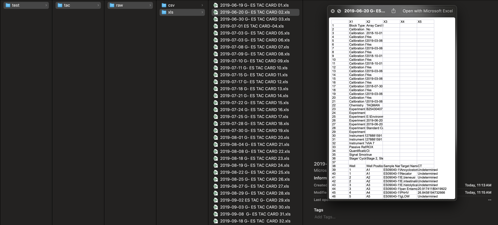
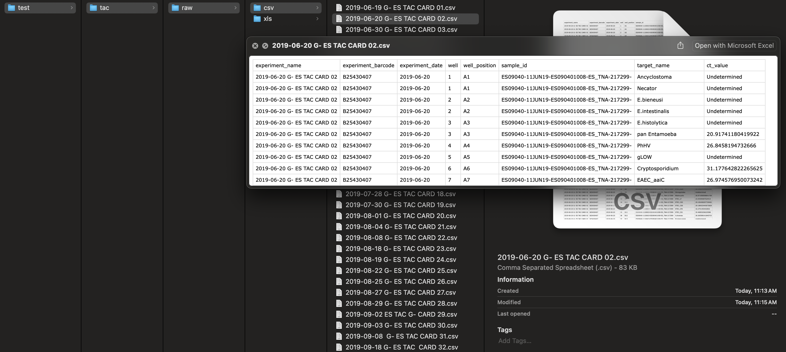

Processing data with the `es.dhaka` package
Source:vignettes/processing_es_data.Rmd
processing_es_data.RmdInstall package
install.packages('devtools')
devtools::install_github('gilesjohnr/es.dhaka', dependencies=TRUE)
library(es.dhaka)Parse card level TAC data
root <- '{path to Dropbox}/ES TAC/'
paths_xls <- c(
file.path(root, "BEED TAC/EXCEL"),
file.path(root, "ES080217432 - ES090317455 TAC Cards/Excel"),
file.path(root, "G- TAC Cards for Polio ES/Excel"),
file.path(root, "Qadri Enteric TAC/EXCEL"),
file.path(root, "KEPS TAC/EXCEL")
)
parse_tac_xls(path_in = paths_xls,
path_out = "./test/tac",
verbose = TRUE)
[==============================================] 100% | Elapsed: 00:01:16 | Remaining: 0s
Input .xls files: 312
Parsed .csv files: 305
Output here: /Users/johngiles/test/tac/raw/csv
Warning messages:
1: In parse_tac_xls(path_in = paths_xls, path_out = "./test/tac", :
File exclude due to >1 sheet:
./Qadri Enteric TAC/EXCEL/2022-04-03 ES QADRI ENTERIC CARD 111.xls
2: In parse_tac_xls(path_in = paths_xls, path_out = "./test/tac", :
File exclude due to >1 sheet:
./Qadri Enteric TAC/EXCEL/2022-04-05 ES QADRI ENTERIC CARD 112.xls
3: In parse_tac_xls(path_in = paths_xls, path_out = "./test/tac", :
File exclude due to >1 sheet:
./Qadri Enteric TAC/EXCEL/2022-04-06 ES QADRI ENTERIC CARD 113.xls
4: In parse_tac_xls(path_in = paths_xls, path_out = "./test/tac", :
File exclude due to >1 sheet:
./KEPS TAC/EXCEL/2023-06-06 KEPS CARD for QADRI ENTERIC CARD 27.xls
5: In parse_tac_xls(path_in = paths_xls, path_out = "./test/tac", :
File exclude due to >1 sheet:
./KEPS TAC/EXCEL/2023-06-09_KEPS_Std1.xls
6: In parse_tac_xls(path_in = paths_xls, path_out = "./test/tac", :
File exclude due to >1 sheet:
./KEPS TAC/EXCEL/2023-06-09_KEPS_Std2.xls
7: In parse_tac_xls(path_in = paths_xls, path_out = "./test/tac", :
File exclude due to >1 sheet:
./KEPS TAC/EXCEL/2023-06-09_KEPS_Std3.xlsOutput includes the original .xls files: 
And reconfigured .csv files containing the raw data: 
Compile TAC data
Compiling card-level .csv files into a single data set requires the
key_target_names data dictionary shown here:
head(es.dhaka::key_target_names)
target_name_unique target_name_concise control include
1 18S 18S NA 1
2 Adenovirus 40/41 Adenovirus_40_41 PhHV 1
4 Adenovirus_40_41 Adenovirus_40_41 PhHV 1
5 Adenovirus_40-41 Adenovirus_40_41 PhHV 1
3 Adenovirus pan Adenovirus_pan PhHV 1
6 Aeromonas Aeromonas PhHV 1Multiple QC steps are performed during compilation:
compile_tac_data(path_in = "./test/tac/raw/csv",
path_out = "./test/tac",
key = es.dhaka::key_target_names,
tau = 40,
verbose = TRUE)
Precheck .csv files
Loading .csv files
Removing excluded targets
Fixing duplicated target names
[==============================================] 100% | Elapsed: 00:02:04 | Remaining: 0s
Editing ct_value responses based on contamination controls
Samples blanks with contaminated observations: 90
[1] "BLANK 17.06.2019" "BLANK 24.06.2019" "BLANK 27.06.2019" "BLANK 03.07.2019"
[5] "BLANK 07.07.2019" "BLANK 10.07.2019" "BLANK 17.07.2019" "BLANK 23.07.2019"
[9] "Blank 18.08.2019" "BLANK 01.09.2019" "BLANK 08.09.19" "Blank 15.09.19"
[13] "blank 1.10.2019" "BLANK 19.12.12" "BLANK 03.02.20" "BLANK 13.05.20"
[17] "BLANK 08.11.2020" "Blank 16.11.20" "Blank 24.11.20" "Blank 06.12.2020"
[21] "BLANK 14.12.20" "Blank 20.12.20" "BLANK 29.12.2020" "Blank 03.01.2021"
[25] "BLANK 12.01.2021" "BLANK 17.01.2021" "BLANK 24.01.2021" "Blank 28.01.2021"
[29] "BLANK 04.02.2021" "Blank 09.02.2021" "BLANK 15.02.2021" "BLANK 18.02.2020"
[33] "BLANK 23.02.2021" "Blank-01032021" "Blank 07.03.2021" "BLANK 11.03.2021"
[37] "BLANK 16.03.21" "Blank 23.03.21" "Blank 28.03.2021" "Blank 05.04.2021"
[41] "Blank 11.04.2021" "BLANK 13.04.2021" "BLANK 22.04.2021" "BLANK 25.04.2021"
[45] "BLANK 08.05.2021" "BLANK 05.05.2021" "Blank 11.05.2021" "BLANK 25.05.2021"
[49] "Blank 27.05.2021" "Blank 02.06.2021" "BLANK 10.06.2021" "Blank 15.06.2021"
[53] "Blank 21.06.2021" "Blank 28.06.2021" "Blank-5.6.2021" "Blank 07.07.2021"
[57] "Blank 15.07.2021" "BLANK 20.07.2021" "Blank 27.07.2021" "Blank-02.08.2021"
[61] "BLANK 03.08.2021" "BLANK 04.08.2021" "BLANK 09.08.2021" "Blank 18.08.2021"
[65] "BLANK 22.08.2021" "BLANK 25.08.2022" "BLANK 30.08.2021" "BLANK 01.09.2021"
[69] "BLANK 08.09.2021" "BLANK 16.09.2021" "BLANK 19.09.2021" "BLANK 26.09.2021"
[73] "BLANK 29.09.2021" "Blank 04.10.2021" "BLANK 10.10.2021" "BLANK 17.10.2022"
[77] "Blank 21.10.2021" "Blank 27.10.2021" "Blank 01.11.2021" "Blank 07.11.2021"
[81] "Blank 11.11.2021" "BLANK 17.11.2021" "BLANK 21.11.2021" "Blank 28.11.22"
[85] "Blank 01.12.2021" "BLANK 08.12.2021" "BLANK 12.12.2021" "BLANK 20.12.21"
[89] "BLANK 26.10.2021" "Blank 02.01.2022"
Number observations removed due to contaminated blanks: 445
18S Ancylostoma Campy_cpn60 Campylobacter_16S
21 2 2 1
Campylobacter_pan Enterobacter Hs99999901_s1 M_tuberculosis
4 13 62 1
MS2_1 MS2_2 pan_PV PhHV_1
153 16 2 147
PhHV_2 Shigella_EIEC Strongyloides
19 1 1
Editing ct_value responses based on amplification controls
[==============================================] 100% | Elapsed: 00:13:58 | Remaining: 0s
Cleaning up remaining 'Undetermined' observations
Parsing sample id
Final data:
'data.frame': 153652 obs. of 10 variables:
$ experiment_name : chr "G- ES TAC CARD 01" "G- ES TAC CARD 01" "G- ES TAC CARD 01" "G- ES TAC CARD 01" ...
$ experiment_barcode: chr "B25430408" "B25430408" "B25430408" "B25430408" ...
$ experiment_date : IDate, format: "2019-06-19" "2019-06-19" ...
$ well : int 1 1 2 2 3 3 4 5 6 7 ...
$ well_position : chr "A1" "A1" "A2" "A2" ...
$ sample_id : chr "ES08010-09JUN19-ES080101001-ES_TNA-217283-" "ES08010-09JUN19-ES080101001-ES_TNA-217283-" "ES08010-09JUN19-ES080101001-ES_TNA-217283-" "ES08010-09JUN19-ES080101001-ES_TNA-217283-" ...
$ sample_date : Date, format: "2019-06-09" "2019-06-09" ...
$ aquaprobe_id : chr "ES080101001" "ES080101001" "ES080101001" "ES080101001" ...
$ target_name : chr "Ancylostoma" "Necator" "E_bieneusi" "E_intestinalis" ...
$ ct_value : num 40 40 40 40 31.1 ...
Compiled TAC data is here: /Users/johngiles/tests/test/tac/compiled_tac.csvParse Aquaprobe data
root <- '{path to Dropbox}/ES TAC/'
paths_aqua <- c(
file.path(root, "TAC final QC MT/Aquaprobe/COVID-19 AQUAPROBE & WATER COLLECTION DATA.xlsx"),
file.path(root, "TAC final QC MT/Aquaprobe/AQUAPROBE2.xlsx"),
file.path(root, "TAC final QC MT/Aquaprobe/Missing AquaProbe Data.xlsx")
)
parse_aquaprobe_xlsx(
path_in = paths_aqua,
path_out = "./test/aqua"
)
./TAC final QC MT/Aquaprobe/COVID-19 AQUAPROBE & WATER COLLECTION DATA.xlsx
./TAC final QC MT/Aquaprobe/AQUAPROBE2.xlsx
./TAC final QC MT/Aquaprobe/Missing AquaProbe Data.xlsx
Input .xlsx files: 3
Parsed .csv files: 3
Output here: ./test/aqua/raw/csvCompile Aquaprobe data
compile_aquaprobe_data(
path_in = c("./test/aqua/raw/csv/COVID-19 AQUAPROBE & WATER COLLECTION DATA.csv",
"./test/aqua/raw/csv/AQUAPROBE2.csv",
"./test/aqua/raw/csv/Missing AquaProbe Data.csv"),
path_out = "./test/aqua"
)
./test/aqua/raw/csv/COVID-19 AQUAPROBE & WATER COLLECTION DATA.csv
./test/aqua/raw/csv/AQUAPROBE2.csv
./test/aqua/raw/csv/Missing AquaProbe Data.csv
Consolidating duplicated measurements
Converting dates
Converting spatial coordinates
Cleaning up
Compiled aquaprobe data is here: ./test/aqua/compiled_aquaprobe.csvMerge compiled TAC data and compiled Aquaprobe data
compiled_tac <- as.data.frame(data.table::fread('./test/tac/compiled_tac.csv'))
compiled_aqua <- as.data.frame(data.table::fread('./test/aqua/compiled_aquaprobe.csv'))
d <- merge(compiled_tac, compiled_aqua, by='aquaprobe_id')
data.table::fwrite(d, file='./test/compiled.csv')
str(d)
'data.frame': 151352 obs. of 37 variables:
$ aquaprobe_id : chr "E0108010001" "E0108010001" "E0108010001" "E0108010001" ...
$ experiment_name : chr "ES QADRI ENTERIC CARD 04" "ES QADRI ENTERIC CARD 04" "ES QADRI ENTERIC CARD 04" "ES QADRI ENTERIC CARD 04" ...
$ experiment_barcode : chr "B41120251" "B41120251" "B41120251" "B41120251" ...
$ experiment_date : IDate, format: "2021-02-02" ...
$ well : int 119 116 118 97 98 117 97 99 100 98 ...
$ well_position : chr "E23" "E20" "E22" "E1" ...
$ sample_id : chr "E010801-02NOV20-E0108010001-ES-COV-TNA-249076-" "E010801-02NOV20-E0108010001-ES-COV-TNA-249076-" "E010801-02NOV20-E0108010001-ES-COV-TNA-249076-" "E010801-02NOV20-E0108010001-ES-COV-TNA-249076-" ...
$ sample_date : IDate, format: "2020-11-02" ...
$ target_name : chr "Norovirus_GI" "PhHV_1" "Sapovirus_124" "Schistosoma" ...
$ ct_value : num 31.3 NA 29.7 NA NA ...
$ temperature : num 28.7 28.7 28.7 28.7 28.7 28.7 28.7 28.7 28.7 28.7 ...
$ barometric_pressure : num 1015 1015 1015 1015 1015 ...
$ depth : num 0.025 0.025 0.025 0.025 0.025 ...
$ ph : num 7.58 7.58 7.58 7.58 7.58 7.58 7.58 7.58 7.58 7.58 ...
$ ph_millivolt : num -58 -58 -58 -58 -58 ...
$ oxidation_reduction_potential : num -74.8 -74.8 -74.8 -74.8 -74.8 ...
$ dissolved_oxygen_percent_saturation: num 19 19 19 19 19 19 19 19 19 19 ...
$ dissolved_oxygen_mg_l : num 1.47 1.47 1.47 1.47 1.47 1.47 1.47 1.47 1.47 1.47 ...
$ electrical_conductivity : num 546 546 546 546 546 ...
$ resistivity : num 1710 1710 1710 1710 1710 ...
$ total_dissolved_solids : num 354 354 354 354 354 354 354 354 354 354 ...
$ salinity : num 0.23 0.23 0.23 0.23 0.23 0.23 0.23 0.23 0.23 0.23 ...
$ specific_gravity : num 0 0 0 0 0 0 0 0 0 0 ...
$ turbidity : num 167 167 167 167 167 167 167 167 167 167 ...
$ altitude : num 4.5 4.5 4.5 4.5 4.5 4.5 4.5 4.5 4.5 4.5 ...
$ location_name : chr "SWITCH GATE, BERIBADH" "SWITCH GATE, BERIBADH" "SWITCH GATE, BERIBADH" "SWITCH GATE, BERIBADH" ...
$ ward_id : int 8 8 8 8 8 8 8 8 8 8 ...
$ location_id : int 1 1 1 1 1 1 1 1 1 1 ...
$ liters_water_collected : num 6.5 6.5 6.5 6.5 6.5 6.5 6.5 6.5 6.5 6.5 ...
$ liters_water_through_filter : num 6 6 6 6 6 6 6 6 6 6 ...
$ liters_water_left_in_bag : num 0.5 0.5 0.5 0.5 0.5 0.5 0.5 0.5 0.5 0.5 ...
$ aquaprobe_file_name : chr "COVID-19 AQUAPROBE & WATER COLLECTION DATA" "COVID-19 AQUAPROBE & WATER COLLECTION DATA" "COVID-19 AQUAPROBE & WATER COLLECTION DATA" "COVID-19 AQUAPROBE & WATER COLLECTION DATA" ...
$ aquaprobe_date : IDate, format: NA ...
$ lat_dms : chr "23d47'59.616\"\"N" "23d47'59.616\"\"N" "23d47'59.616\"\"N" "23d47'59.616\"\"N" ...
$ lat_dd : num 23.8 23.8 23.8 23.8 23.8 ...
$ lon_dms : chr "90d20'37.308\"\"E" "90d20'37.308\"\"E" "90d20'37.308\"\"E" "90d20'37.308\"\"E" ...
$ lon_dd : num 90.3 90.3 90.3 90.3 90.3 ...